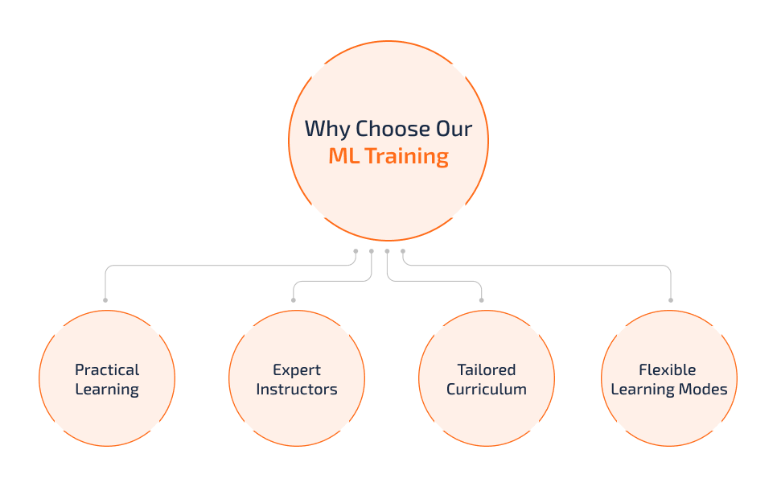
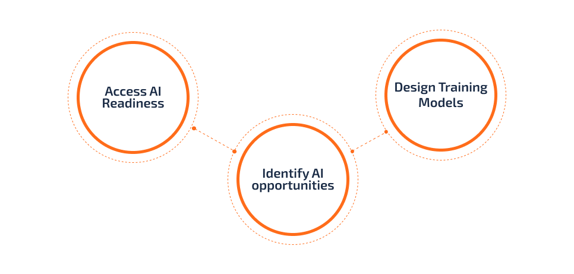
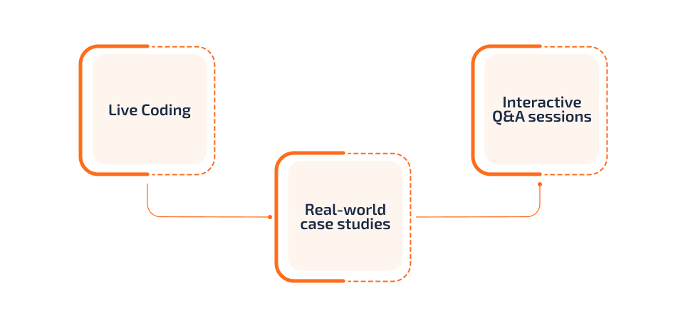
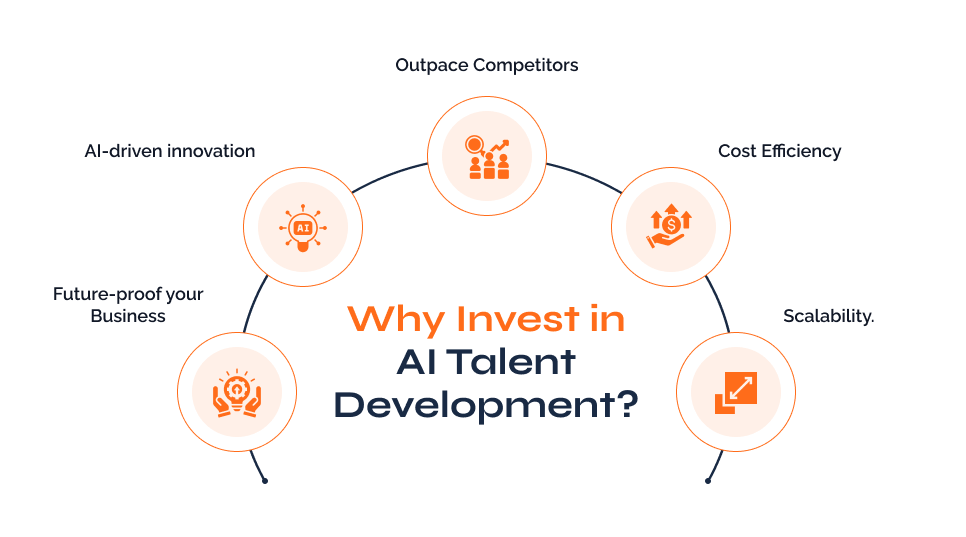
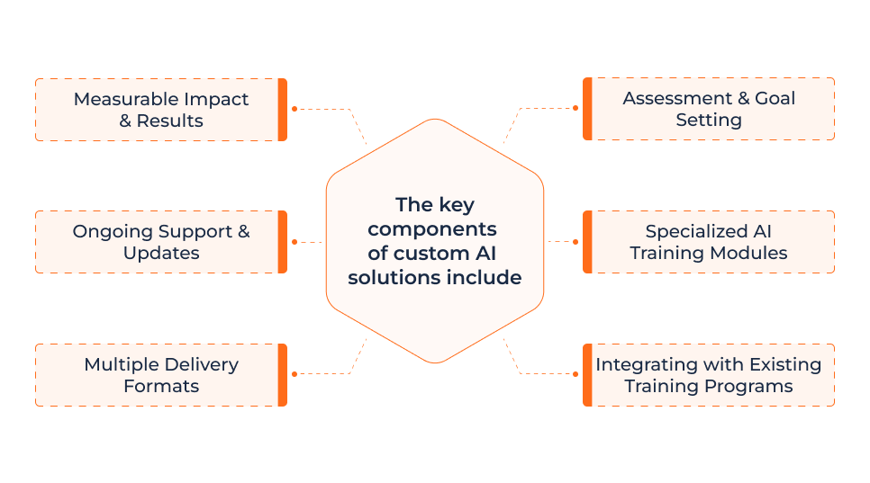

Artificial Intelligence (AI) is no longer a hype, it is an emerging technology and is being opted by various industries. In one way or the other, our everyday tasks are handled by AI. This progress wouldn't have been possible without proper AI training and development. Whether you want to enhance operational efficiency, decision-making, or customer experiences, you should definitely consider investing in AI training and development.
We are a leading AI development company offering comprehensive AI training and development services to help businesses harness the fullest potential of AI and stay ahead in the competitive market. Moreover, we understand not all businesses are the same and thus we offer our AI training and development services tailored to your business needs.
Investing in well-trained AI models ensures long-term success. That's why we help businesses prioritize AI training to achieve long-term growth, automation, improved decision-making, and enhanced customer support. With our expertise, we ensure to take care of smooth AI adoption for your business.
An Overview of What Our AI Training and Development is All About?
AI Training and Development is the process of building, refining, and optimizing AI models in such a way that aligns with business goals. It involves data collection, model training, testing, and optimizing AI solutions for continuous improvements. With our AI training and development services, we help your business to seamlessly integrate AI to handle everyday operations efficiently. This includes custom training programs that simplify AI concepts, strategic Artificial Intelligence development, and hands-on workshops. Whether you want to use AI for automation, decision-making, or innovation, we help you with bridging the gap between AI technology and implementation.
As businesses increase adopting AI, the demand for trained AI models handling industry-specific challenges increases. We are a trusted AI development company and we follow ethical standards and compliance during the AI training and development. Team up with us to leverage AI into your business to gain a competitive edge in your industry.
AI Training for Business Growth - Empowering Teams with Practical AI Knowledge
Integrating AI into your business is not the end. In order to see the best of AI, it is vital to train the in-house teams in your firm to drive business growth. By partnering with our AI consulting services, we ensure to provide comprehensive training to your employees. This way, we make sure they gain relevant knowledge and skills to integrate AI into business operations, automate workflows, prioritize important tasks that require manual attention, and make better decisions based on data.
No matter if you are new to AI integration or want to improve your customer engagement, partner with us for advanced AI training and receive sustainable growth. We have skilled experts in AI and they provide training that covers everything from basic to advanced AI technologies. We have designed our AI training programs in such a way businesses and teams understand and apply AI effortlessly.
Here is what you will gain upon choosing our AI Training Services:
1. Upon analyzing your business type, trends, and AI adoption possibilities, we offer customized training modules that offer a smooth learning curve for your team.
2. We support hands-on workshops that cover everything from machine learning, data analytics, AI model training and optimization, ethical AI deployment, and best practices.
3. Providing practical knowledge is all we believe for efficient operations and hence we help businesses and teams to apply AI to business operations to solve challenges.
Customizable AI Development to Enhance Business Operations
In the evolving digital landscape, AI solutions grow alongside business growth. Hence, we have created our AI development services in such a way that focuses on designing and deploying customizable AI solutions. With a structured approach to integrating AI into your business operations, we ensure you with efficiency, accuracy, scalability, and measurable results.
Here is what you need to know all about our AI development approach:
1. We begin with an in-depth analysis of your business operations to find areas that require AI assistance and create a strategic roadmap that optimizes operations, enhances customer experiences, and reduces costs.
2. Our AI development is highly customizable and we develop AI models tailored to your needs. It can be integrated with intelligent automation systems, predictive analytics models, AI-powered chatbots, NLP applications, etc.
3. We make sure the AI tools and technologies work with your existing business systems such as software, databases, and cloud platforms without causing any disruptions to the workflow.
4. After the deployment, we ensure to monitor AI models continuously and fine-tune them for efficiency, accuracy, and speed.
Why Choose Comprehensive Machine Learning Training?
With AI-powered solutions, your business or team can touch the untapped areas in the industry, optimize business processes, and drive innovation. Machine Learning (ML) is the most widely used AI technology which when integrated into your existing system will analyze a larger dataset, identify patterns, make data-driven decisions, and enhance customer engagement.
We don't just stop with integrating ML into your business to automate processes and gain a competitive edge. Rather, we provide machine learning training to your business professionals. This includes hands-on experience in building, training, and integrating ML models.
Our ML training suits anyone from beginners to experienced professionals and anyone in between. Collaborate with our Artificial Intelligence development company to understand, apply, and innovate with ML technologies.
Take a look at what our ML Training is set to offer you with:
1. A Solid Foundation of ML
2. Supervised Learning
3. Unsupervised Learning
4. Deep Learning & Neural Networks
5. Model Deployment & Optimization

Customized AI Training for Businesses to Unlock AI Potential
To make use of AI integration to the fullest, it is essential to train your teams with AI technologies. It is because successful AI adoption lies in having a skilled workforce that understands and implements AI technology in business operations. With our comprehensive AI training for business, we ensure to provide your team with all the required knowledge, tools, and hands-on experience to integrate AI efficiently. As each business has different goals, challenges, opportunities, and industry requirements, we provide customized training programs as per the AI model developed.
Here is what sets our AI Training for Business apart:
1. We offer customized training that meets your business needs.

2. Our training is beyond theory as we provide hands-on and practical training.

3. This training covers key AI concepts from AI fundamentals to Machine Learning, Predictive Analytics, AI-powered automation, Ethical AI, and Responsible implementation.
The Power of AI Talent Development for Business Growth
The growth of AI opens up opportunities and challenges for businesses. Organizations should pay attention to not just adopting AI technologies but also possess the right talent to lead these initiatives. AI talent development is the key strategy to create a skilled workforce. This opens up the possibility of achieving maximum growth with AI integration. We focus on providing knowledge, skills, and access to necessary tools with our AI Talent Development services. Thus your employees will evolve into AI experts as we provide them with upskilling programs, continuous learning, and mentorship.
Here is what Our AI Talent Development Process is Involved With:
Firstly, we analyze your team's skill levels to bridge the gaps related to AI technologies. We provide customized training programs tailored to your team.
We craft customized training programs for your teams with hands-on workshops, live coding sessions, and real-world case studies to handle industry challenges. During this session, employees will gain practical skills to implement and manage AI solutions in your business.
AI is evolving and learning its ins and outs is going to be a continuous process. To ensure long-term success, our expert AI mentors collaborate with your team and help them deal with complex AI problems, provide career advice, and empower employees to apply AI technologies effectively with the gained knowledge.
AI is an emerging technology and businesses need to keep up-to-date with it. Hence, our AI talent development services offer continuous learning resources such as online courses, webinars, and research materials to help your team stay updated with the latest trends.
AI Talent Development is not just about training employees with AI technologies. It's about fostering a culture of excellence that values innovation, better decision-making, and continuous improvements.
For the following reasons, businesses can start investing in AI Talent Development:

1. With a strong team of AI experts, your organization is prepared for the future to achieve long-term growth and success.
2. Identifying opportunities for AI-driven innovation is possible with a skilled AI team. Their vision leads to improvising products, services, and operations.
3. A well-trained workforce helps your business to outpace the competitors and thereby responds to market demands in a better way.
4. Upon investing in AI talent development, your organization need not rely on external AI consultants and services. This saves time and money for your organization.
5. By owning a knowledgeable AI workforce, AI solutions turn out to be scalable as your business grows.
Custom AI Training Solutions - Personalized, Scalable, & Result-Driven
Utilizing a general training approach will not fit in for all businesses. For this reason, we offer custom AI training solutions for businesses that are tailored to meet the organization's goals, challenges, and culture. Our approach to AI training is entirely flexible and meets the needs of the business.
Here is Why You Should Choose Custom AI Training Solutions:
Custom AI training aligns with business goals and industry requirements, Thus, your team gains practical knowledge that aligns with the business goals.
Organizations can maximize ROI as customer AI training focuses on implementing AI on high impact areas to drive measurable improvements. This in turn increases innovation, workflow, and customer satisfaction.
Any business integrated with AI is scalable. Hence we offer bespoke AI training solutions and they evolve with your business growth and we train employees to meet new challenges.
Our training is tailored to your team's requirements while fostering engagement, motivation, and better outcomes.
We provide a flexible training session and thus your team can learn AI technologies at their own pace.

Optimized AI System Development - Delivering Impactful Solutions
Developing robust and scalable AI solutions is more than just implementing the pre-built model. It involves a step-by-step process that aligns AI solutions with your business goals, integrates with existing systems, and brings in measurable impact. We crafted our AI system development services to be stable, secure, scalable, and high-performing. We provide end-to-end support from data collection to implementation and optimization.
Stages of AI System Development - At a Glance
1. Data Collection & Preprocessing
2. AI Model Selection & Training
3. AI System Deployment
4. AI System Optimization & Continuous Learning
With our AI system development, manual workload will be reduced thus speeding up processes with automation. You will get the advantage of data-driven decision-making, enhanced customer experience, scalability, and cost reduction.
Key Components of AI Training Frameworks
By choosing our AI training framework, you are empowering your teams with hands-on, practical learning for AI applications. They will also gain experience with the latest AI technologies. We provide tailor-made AI training based on their skill level and industry requirements. With our AI training frameworks, businesses can implement AI effortlessly for measurable results.
Our AI Training Frameworks include:
1. Understanding the Core AI Concepts - We transfer strong theoretical knowledge for core concepts of AI including ML, Data Science, Neural Networks, Deep Learning, Supervised and Unsupervised learning, etc.
2. Hands-On Training - Our frameworks support practical application through hands-on projects, real-word case studies, and integrating with existing systems.
3. AI Tools & Platforms - We use cutting-edge AI tools that are used in the industry and ensure your team is prepared to work in real-world AI environments.
4. Structured Learning Pathways - Our AI training framework is designed to be structured learning pathways and thus covers everything to meet the skill levels for beginners, intermediate, and advanced levels.
5. AI Certification & Continuous Learning - With our training framework, employees will be getting AI certification upon completing the training. We also provide ongoing AI learning resources to make sure they stay updated with AI trends.
Modern AI Technology Stack to Power Up Business Operations
We have integrated with AI technologies and ensure a strong foundation of advanced tools, frameworks, and platforms for Artificial Intelligence development, deployment, and optimization. They are modern, scalable, cost efficient, optimized, and industry-proven. Our AI training and development incorporates programming languages, machine learning libraries, cloud-based services, and deployment frameworks.
Check out the key components of our AI Technology Stack:
1. Programming Languages - Python, R, Java, C++
2. Machine Learning & Deep Learning Frameworks - TensorFlow, PyTorch, Scikit-Learn, Keras
3. Data Processing & Analytics Tools - Pandas & NumPy, Apache Spark, Hadoop.
4. Cloud AI - Google Cloud AI, AWS AI Services, Microsoft Azure AI, IBM Watson AI.
5. AI Model Deployment & MLOps - Docker, Kubernetes, FastAPI, Flask, MLflow, TensorBoard.
Industries We Empower with AI Solutions
With the integration of AI, industries are transforming the way they operate leveraging automation, predictive analysis, and enhanced customer experiences. We offer AI training and development to a wide range of industries thereby helping them with efficiency, accuracy, and decision making.


All the Reasons to Choose Us as Your AI Training & Development Company
We possess industry expertise and we have a dedicated AI team with skilled developers. With our comprehensive AI Training and Development, your team gains the necessary skills and knowledge to use AI integration to the fullest. Whether you want to upskill your employees, build an in-house AI team, or develop AI-driven solutions, we offer customized and hands-on training to meet your business needs.
1. With cutting-edge AI knowledge and a business-driven mindset, our training is handled by AI specialists, data scientists, and industry experts.
2. We have tailored our AI training programs to align with your strategic goals. Our training is industry-specific, practical, and more hands-on.
3. With our structured AI talent development program, you can build an AI-ready future-proof workforce.
4. We offer fully customizable and flexible AI training programs that integrate with your business structure seamlessly.
5. We provide a robust learning experience for your team with advanced AI training frameworks and industry-standard tools.
Invest in Expert AI Training & Development Today to Empower Your Business
It is obvious that the future of business is AI-driven and investing in AI training and development is vital to stay ahead of the competition in the digital landscape. A well-trained AI workforce will help you unlock new opportunities which in turn impacts your business growth and efficiency. By choosing our AI training and development services, your team gains access to custom AI solutions, hands-on training, and continuous learning opportunities. Connect with us to future-proof your business that drives innovation, automation, and efficiency.
Frequently Asked Questions
AI training and development is a process that involves educating individuals or teams in your organization about AI concepts and creating AI-powered solutions customized to your specific business needs. This includes understanding AI technologies like machine learning algorithms, data processing techniques, predictive analytics, etc., to solve your business problems.
Data is the foremost requirement for AI training with which users can learn about the patterns, make predictions, and make data-driven decisions. High-quality data ensures the AI system delivers more accurate and effective results.
AI Training is classified into different types ranging from Supervised learning, unsupervised learning, and Reinforcement learning.
The exact time to train an AI model varies based on the complexity of the model, volume, data quality, and resources availability. Training a simple model takes a few hours while a complex model with a larger dataset may take a few days to weeks.
Yes. AI can be trained for real-time decision making with the help of advanced algorithms and optimized processing techniques. With this, AI can provide instant responses in real time.